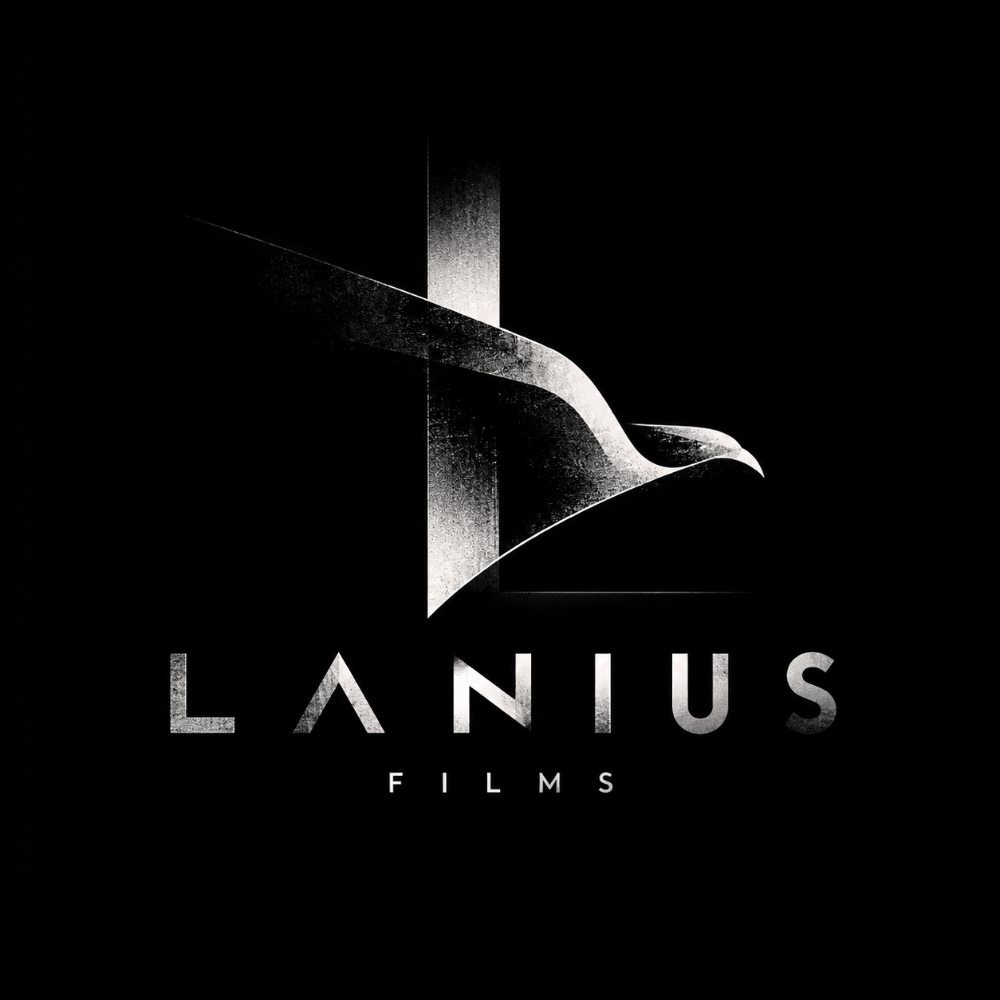

AI fragrance spec film

Beauty / Fashion / Commercial
Self-initiated beauty and fashion films exploring mood, styling and visual storytelling through generative production.
Explore 3 films ↓AI FRAGRANCE SPEC FILM / 16:9
A cinematic fragrance spec film exploring desire, freedom and a little danger after dark.
WATCH THE WORK